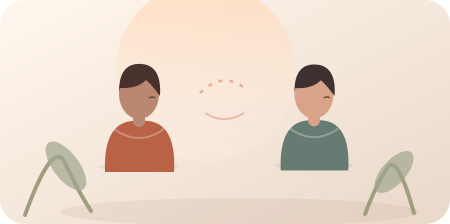

Einen Moment …
Was könnte dahinterstecken?
Alternative Erklärung:
Nächste Beraterfrage:
Skill-Stabilität beruht auf zeitlich getrennten richtigen Antworten. XP belohnen Übung und sind kein Kompetenznachweis.
Eine Runde mischt vier Übungen: Antwortblasen, Hinweisjagd, Zuordnen und Beraterfrage. Alle Situationen sind erfunden und keine Diagnosen.
Gute Hypothesen bleiben überprüfbar.